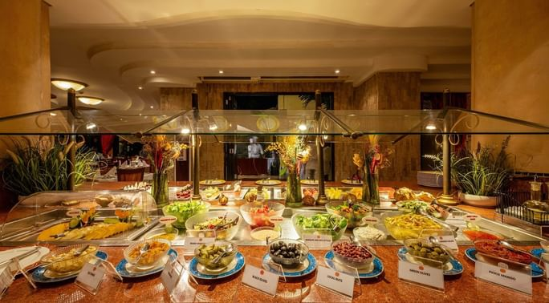
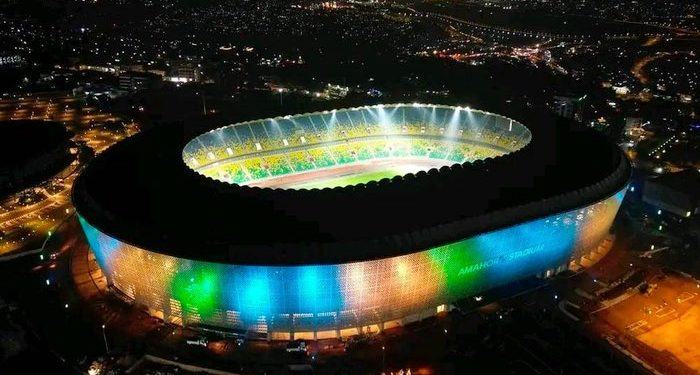
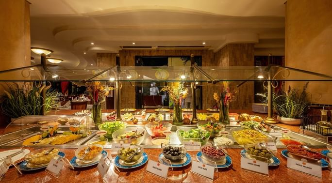
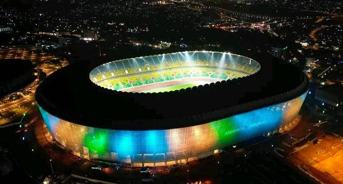

1.Service Delivery
The district ensures access to essential services including education, health, water, sanitation,
and infrastructure. and Sector and cell offices are equipped to handle civil registration, basic healthcare
referrals, and local development initiatives.
2.Planning and Development
Gasabo District formulates five-year development plans aligned with the national strategy for transformation (NST1).
These plans outline sector priorities, infrastructure projects, and poverty alleviation strategies.
3.Good Governance and Citizen Participation
The district promotes transparency, rule of law, and active citizen participation through community
meetings (Inteko y’Abaturage), performance contracts (Imihigo), and regular consultations with civil society organizations.
4.Security and Justice
Local defense units, in collaboration with the Rwanda National Police and Rwanda Investigation
Bureau, maintain security. Community policing and local mediation councils (Abunzi) help resolve disputes and prevent crimes.
Urban Management
As part of Kigali City, Gasabo plays a key role in land use planning, building permit issuance, waste management,
and environmental protection. The district works closely with Kigali City Council on urban infrastructure and smart city initiatives.
1. Kimironko Trading Center
Location: Kimironko Sector
Features: One of the busiest and largest markets in Kigali.
Activities: Sale of foodstuff, clothing, electronics, and household goods.
Significance: A regional commercial hub attracting traders and consumers from across Kigali and beyond. Known
for Kimironko Market and nearby shopping complexes.
2. Remera Trading Center
Location: Remera Sector
Features: Dense urban commercial zone.
Activities: Retail shops, banks, hotels, restaurants, transport services.
Landmarks: Amahoro Stadium, regional bus stations, and hospitality businesses.
Significance: Strategic for sports, tourism, and transport-linked trade.
3. Gisozi (Kacyiru–Gisozi) Commercial Zone
Location: Gisozi and Kacyiru Sectors
Features: Mix of residential and commercial zones.
Activities: Office buildings, supermarkets, construction material shops.
Landmarks: Amahoro Stadium, regional bus stations, and hospitality businesses.
Significance: Strategic for sports, tourism, and transport-linked trade.
1. Primary and Secondary Schools
Gasabo has over 200 primary schools and more than 100 secondary schools, both public and private. These
institutions are distributed across the 15 sectors to ensure accessibility.
Examples of notable schools:
Green Hills Academy - Private international school in Nyarutarama.
La Colombière School - High-performing private school in Kimihurura.
Saint Ignatius School – Catholic school known for discipline and academic performance.
2. TVET and Vocational Training Schools
Technical and Vocational Education and Training (TVET) centers are a key priority for reducing youth unemployment.
Notable TVET institutions:
Gacuriro TVET School – Offers training in carpentry, tailoring, and plumbing.
Kicukiro Integrated Polytechnic (KIP) – Though based in neighboring Kicukiro, it serves many stu from Gasabo.
APACE TVET School – Located in Kimironko, focusing on electrical and mechanical skills.
TVET schools are supported by the Rwanda TVET Board (RTB), and Gasabo actively promotes
TVET enrollment, especially among out-of-school youth.
3. Higher Education Institutions
Some of Rwanda’s top universities and colleges are located within or near Gasabo District.
Examples include:
University of Rwanda – College of Medicine and Health Sciences (CMHS) – Located near Remera.
Adventist University of Central Africa (AUCA) – Located in Masoro, Gasabo District.
Mount Kenya University – Rwanda Campus – Near Gisozi.
Kepler Kigali Campus – Offers innovative, blended higher education in partnership with Southern New Hampshire University (SNHU).
These institutions provide undergraduate and postgraduate degrees in areas such as medicine, business, engineering, ICT, and education.
Health Centers in Gasabo District
Gasabo District has a well-organized and expanding healthcare system that serves its
large and diverse population. The district works under the national Ministry of Health
and Rwanda Biomedical Center (RBC) to provide accessible, affordable, and quality health
services. Health service delivery in Gasabo is built on a three-tier system: health posts,
health centers, and hospitals — supported by community health workers (CHWs) at the village level.
Examples of Health Centers in Gasabo:
Kimironko Health Center – Urban facility with maternity and lab services.
Jabana Health Center – Rural-based, focuses on maternal health and preventive services.
Gikomero Health Center – Serves remote areas with community outreach programs.
Gisozi Health Center – Serves a densely populated zone.
Ndera Health Center – Linked to CARAES-Ndera Hospital, specializing in mental health support.
Future Priorities and Investments
Upgrade health centers to handle higher patient loads.
Digitize health records to improve efficiency and referrals.
Expand mental health and NCD care to more facilities.
Train and retain skilled staff, especially midwives and lab technicians.
Build more health posts in underserved areas like Rutunga and Jali.
Gasabo District has a robust and improving health system that plays a central role in
public well-being. With a network of community health workers, accessible health centers,
and referral hospitals, the district is well-positioned to meet the health needs of its
growing population. Through continued investment, innovation, and community engagement,
Gasabo aims to deliver universal, inclusive, and sustainable healthcare for all its residents.
1. Sports and Physical Fitness Facilities
Gasabo hosts several sports complexes and gyms used for both casual and competitive activities.
Examples of sport Centers in Gasabo:
a. Amahoro Stadium (Remera) – Hosts football matches, athletics events, concerts, and national ceremonies.
b. BK Arena (Remera) – Hosted international tournaments like AfroBasket and BAL (Basketball Africa League).
c. Kigali Golf Resort & Villas (Nyarutarama) – Exclusive club with a clubhouse, training areas, and a scenic environment.
d. Fitness Centers and GymsExaples: WAKA Fitness (Kacyiru),The Gym Kigali (Nyarutarama),CrossFit Yego (Kimironko)
2. Hotels in Gasabo District
Gasabo District, being part of Kigali — Rwanda’s capital — is home to a wide range of hotels and
accommodation facilities that cater to both local and international guests. From luxury hotels
to budget lodges and guesthouses, Gasabo offers comfortable lodging options for business
travelers, tourists, conference attendees, and long-term
1. Luxury and High-End Hotels
a. Kigali Marriott Hotel – 5-star hotel, multiple restaurants, pool, spa, and meeting facilities
b. Radisson Blu Hotel & Kigali Convention Center (Kacyiru) – Offers luxury rooms, rooftop bar, restaurants, and international-standard service.
c. Kigali Serena HotelFrequently hosts international delegations and high-level events.
2. Guesthouses and Budget Hotels
In sectors like Kimironko, Remera, and Gisozi, you’ll find smaller hotels and guesthouses popular with budget travelers, students, and short-term visitors.
Examples:
Hill View Hotel (Kacyiru): Mid-level with modest rooms.
Isimbi Hotel (Remera): Affordable with restaurant service.
Good News Guesthouse (Gisozi): Christian-based guesthouse with peaceful grounds.
La Posh Hotel (Remera): Simple and convenient for airport access.
 


